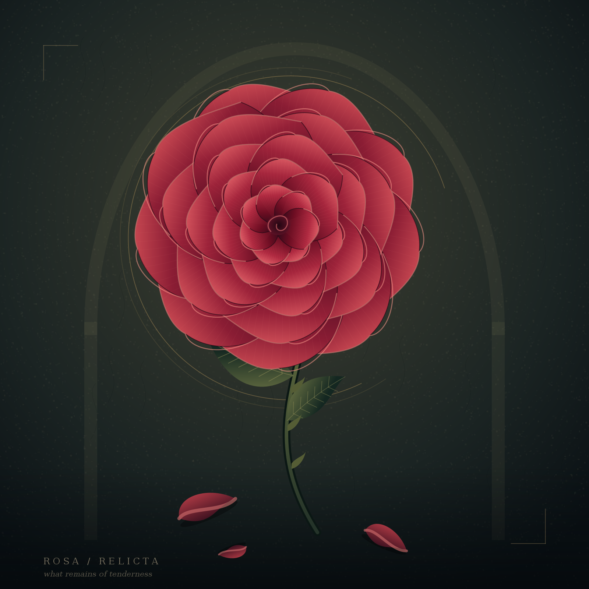
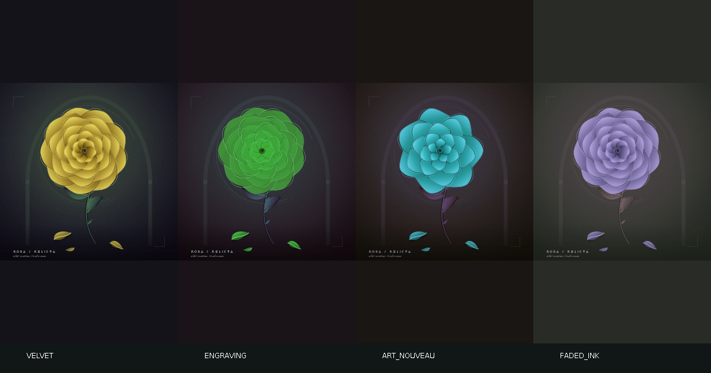

JAVA2D / VERSION 2.3.0
Rosa
relicta.
Программно нарисованная роза. Тёмная арка, потускневший нимб и опавшие лепестки — авторская трактовка abandoned symbolism.
Архитектура, запуск и устройство рендера.
Открыть подробную Wiki →
01 / Два режима работы
Окно Swingmain → EDT → JFrame → RoseDrawing → paintComponent.
Общий рендерrenderScene → масштабирование → paintArtwork → BufferedImage.
Экспорт PNGmain --export → renderScene → ImageIO.write. Дисплей не требуется.
02 / Ответственность компонентов
| Компонент | Роль |
|---|
| RoseDrawing | Панель, кэш, точка входа, рендер и экспорт. |
| paintArtwork | Порядок художественных слоёв и композиция. |
| petal / leaf / fallen | Геометрия Безье, градиенты, локальные преобразования. |
| RoseDrawing_2 | Совместимое старое имя запуска. |
| RoseRenderingCheck | Детерминизм, цветовые области, масштабирование и paint. |
03 / Слои картины
Фон → арка и нимб → фактура → нижняя тень → стебель и листья → чашелистики → 37 лепестков в пяти кольцах → сердцевина → опавшие лепестки → подпись.
Логический холст 1000 × 1000. Масштаб — min(width, height) / 1000. Квадрат центрируется; свободные поля остаются тёмными. Seed 1913 сохраняет расположение фактуры между рендерами.
04 / Запуск и сборка
java -jar abandoned-rose-symbolism.jar
java -jar abandoned-rose-symbolism.jar --export rose.png
Нужна Java 17+. Для сборки нужен JDK: build.bat или sh build.sh. Проверки: test.bat / sh test.sh. Maven запускает JUnit Jupiter 6.1.3 через Surefire 3.2.5 и собирает JAR: mvn clean verify.
05 / Ресурсы и ограничения
Внешних runtime-зависимостей и сетевых запросов нет. Кэш панели пересоздаётся при изменении размера. Graphics2D освобождается после рисования. Изображение статично; GUI-редактор и анимация не реализованы. Экспорт PNG — 1600 × 1600.
Первый рендер выполняется в EDT; очень большое окно может кратко задержать интерфейс. Шрифт системный, поэтому подпись может слегка отличаться между ОС.
06 / BACK + REDRAW
Показанные варианты хранятся в истории Appearance. BACK возвращает предыдущее сохранённое превью. REDRAW после BACK работает как «вперёд» и восстанавливает следующий сохранённый вариант; только на конце истории он создаёт новый цветовой тон, насыщенность, яркость, seed и один из четырёх стилей: VELVET, ENGRAVING, ART NOUVEAU, FADED INK. Оба перехода сбрасывают render-cache, а resize не меняет текущий Appearance. CLI-экспорт сохраняет исходную композицию.

07 / Проверки
mvn clean verify проверяет минимум 90% строк и 90% ветвей. Встроенный RoseRenderingCheck дополнительно проверяет deterministic rendering, BACK/REDRAW history, cache invalidation и resize. Папка coverage-report в исходной поставке относится к предыдущему измеренному baseline; после изменения UI актуальный отчёт создаётся в target/site/jacoco.
08 / Документация
Запуск · Архитектура · Рендеринг · Настройка · Разработка · Проверки · Решение проблем · Изменения
Wiki — локальные Markdown-файлы; для форматированного чтения используйте Markdown-редактор. Эта HTML-страница открывается без сервера.